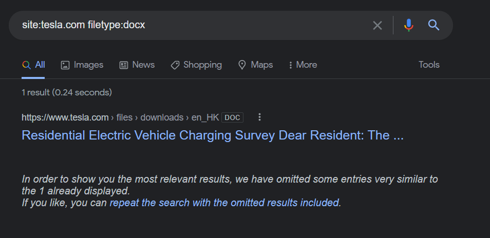
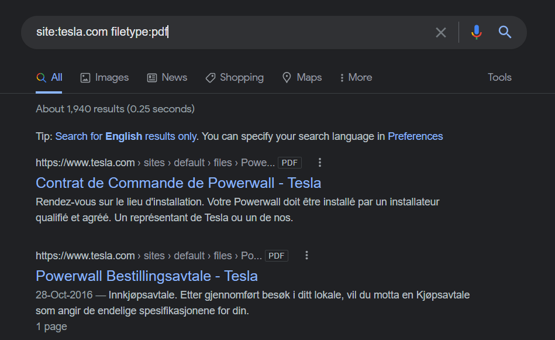

What make's a really good pentester or anything in IT sector ?
- Is the ability to Google.
- Here is a blog on how to do advance level searching in google. (i.e. https://ahrefs.com/blog/google-advanced-search-operators/)
We will now see what is Google Fu?
- It is a advance level searching where we use specific phrases and keywords and do our searching.
- It's like a Jen the more we do the more we know how google macro functions and the more we become successfull in finding our query's.
Like in our case for Tesla.
- site:tesla.com
here we will see all the websites realted to tesla.com
-site:tesla.com -www
-site:tesla.com -www -ir (i.e. here ir means investor relation)
Here we have substracted the www and done the searching and got different results and find more and more sub-domains.
Now what about filetype ?
- site:tesla.com filetype:docx

- site:tesla.com filetype:pdf

Why are we searching all these file types ?
- We are in the seach of all the sensitive files out there.
- So google is our absolute best friend. So before we ask anyone a question no matter how complex the problem is Always to do a google search firstand
make sure we have done our research and than ask anyone and it is good to have that habbit.
- This is what is going to make or break us in our carreer.